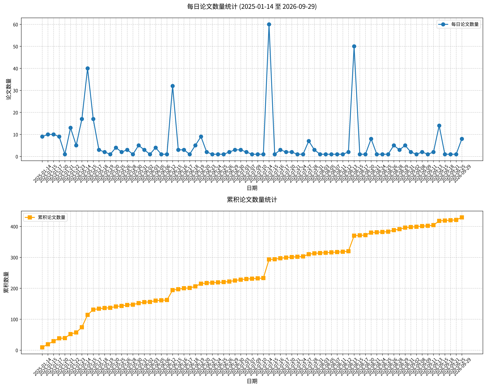

原文标题： In the eye of the beholder? Universality and cultural specificity in the expression and perception of emotion
摘要： 不同文化的成员是否会以相同的方式表达（或“编码”）情绪？不同文化的成员在多大程度上能够识别（或“解码”）彼此的情绪表达？情绪表达中的文化普遍性与特异性问题半个多世纪以来一直是争论的热点，但尽管迄今已产生了大量实证研究，仍未出现令人信服的答案。我们认为，这种不尽如人意的状况在很大程度上是由于缺乏对情绪表达与感知所涉及的具体机制的关注，并提出使用经过改造的布伦斯维克透镜模型作为该领域研究的适当框架。在此基础上，我们对现有文献进行了全面综述，并指出了可能提供解决情绪表达普遍性与文化特异性之争所需证据的研究范式。运用这一新视角，我们的分析表明，鉴于相关数据的匮乏，目前无法就跨文化的实际表达（编码）模式得出确定结论（尽管相似之处似乎多于差异），但有令人信服的证据表明解码或识别能力存在跨文化连续性。我们还注意到，越来越多的研究关注由表达“方言”所导致的内群体优势这一概念，其超越了普遍的编码或解码模式。此外，我们认为这些实证模式既可由 underlying 机制的普遍性来解释，也可由这些表达与感知机制在输入和调节方面的文化特异性来解释。总体而言，仍需要更多证据，以进一步阐明这些机制并盘点文化效应的模式。我们强烈建议在设计未来情绪表达与感知研究时，采用更坚实的理论与概念视角，以及更具生态效度的研究方法。
关键词： 情绪表达；情绪感知；文化普遍性；文化特异性；布伦斯维克透镜模型
论文链接： Crossref
原文标题： Automatic Emotion Regulation
摘要： 人们如何有效地调节自己的情绪反应？为什么有些人比其他人更擅长这一点？以往大多数研究通过聚焦于有意情绪调节的形式来探讨这些问题。我们认为，这种聚焦忽略了情绪调节的一个重要方面，即自动情绪调节（AER）。我们对行为文献的综述表明，AER在日常生活中普遍存在，并对个体的情绪具有深远影响。然而，行为文献尚未阐明所观察到的效应背后的机制。由于直接测量AER所涉及的过程较为困难，来自神经科学研究的证据对于解决这些问题尤为有帮助。我们对神经科学文献的综述表明，不同类型的AER具有不同的神经基础，这为可能参与AER的认知和行为过程提供了重要线索。
关键词： 自动情绪调节；情绪调节；神经基础；认知过程；行为过程
论文链接： Crossref
原文标题： Lifetime Sexual Victimization and Poor Risk Perception
摘要： 本研究考察了情绪失调的哪些方面在既往受害经历与模拟性侵情境中的风险感知之间起中介作用。参与者为714名大学女性，她们完成了关于性受害经历、情绪失调的自评量表，并阅读了一个由计算机呈现的大学聚会场景文字脚本，该场景最终导致熟人强奸。约42%的样本报告曾在童年、青春期或成年期经历终身性受害。情绪失调的两个具体方面——情绪调节策略获取受限和冲动控制困难——在终身受害经历与较晚离开该情境之间起中介作用。研究结果表明，情绪失调在预测受害者风险感知中具有重要作用，并且在减少再次受害风险的干预中，改善受害者的情绪调节技能具有重要意义。
关键词： 性受害；情绪失调；风险感知；情绪调节；再次受害
论文链接： Crossref
原文标题： Multiple sclerosis, emotion perception and social functioning
摘要： 多发性硬化（MS）患者可能在解读他人来自面孔或声音的情绪时遇到困难。然而，迄今为止，关于MS中的情绪感知困难是否与更广泛的社会功能方面相关，人们知之甚少。此外，很少有研究报道MS对使用多模态视频进行更具生态效度的情绪感知评估的影响。本研究考察：（1）MS对从面孔、声音和多模态视频中感知情绪的影响；（2）加工速度减慢和执行功能障碍在MS情绪感知问题中的可能作用；（3）MS中情绪感知与更广泛社会功能之间的关系。53名MS患者和31名健康对照完成了情绪感知和认知任务，并评估了其社会支持和社会参与水平。MS参与者在所有情绪感知测量上的表现均差于人口学匹配的对照组。在MS患者中，情绪感知表现与认知测量相关。此外，MS中的情绪感知困难与较差的社会功能之间也存在显著关联。特别是，情绪感知较差的MS患者还报告来自朋友的社会支持水平较低，回归分析表明，即使将疾病严重程度和认知功能纳入考虑，这一预测关系仍然成立。这些结果表明，MS中的情绪感知问题会延伸到更现实的任务中，并可能预测社会功能的关键方面。
关键词： 多发性硬化；情绪感知；社会功能；认知功能；多模态视频
论文链接： Crossref
原文标题： Orbitofrontal Cortex and Social Behavior: Integrating Self-monitoring and Emotion-Cognition Interactions
摘要： 眶额皮层在社会行为中的作用仍是一个谜。关于眶额皮层社会功能的各种理论，或聚焦于该区域在情绪加工中的作用，或关注其参与对行为的在线监控（即自我监控）。本研究试图整合这两种理论，通过考察改善眶额损伤患者的自我监控是否与产生指导人际行为所需的情绪相关联。眶额损伤患者、外侧前额叶损伤患者和健康对照组参加了一项人际任务。完成任务后，通过向参与者展示其任务表现的录像来提高其自我监控水平。与健康对照组和外侧前额叶损伤患者相比，眶额损伤与客观上不恰当的社会行为相关。尽管眶额损伤患者了解亲密性的社会规范，但他们并未意识到自己的任务表现违反了这些规范。通常与不恰当社会行为相关的尴尬情绪，只有在这些患者通过观看自己的录像表现而使自我监控提高之后才被诱发。这些发现表明，眶额皮层的损伤损害了自我洞察，这可能阻碍了有益情绪信息的产生。结果突显了眶额皮层在自我监控与情绪加工相互作用中的作用，并为眶额损伤后社会缺陷患者的神经康复提供了途径。
关键词： 眶额皮层；社会行为；自我监控；情绪加工；情绪-认知交互
论文链接： Crossref
原文标题： Recognizing vocal expressions of emotion in patients with social skills deficits following traumatic brain injury
摘要： 目的：创伤性脑损伤（TBI）后对语音中情绪的感知受损。本研究考察了无法同时加工口语语义信息（“什么”）与情绪韵律（“如何”）是否会导致情绪韵律识别受损，以及当提供很少或完全不提供语义信息时这种损害是否会改善。方法：将18名在住院康复期间表现出社交技能缺陷的中重度TBI患者与18名人口学匹配的对照组进行比较。参与者完成两项辨别任务，所用口语句子在语义信息量上有所不同：（1）规范英语，（2）无意义语言，（3）低通滤波语音，产生“模糊”的声音。结果：降低语义加工需求并未改善情绪韵律的感知。TBI组准确性显著低于对照组。与仅进行“相同/不同”判断相比，当TBI组需要访问语义记忆来标注句子情绪时，损害更大。结论：研究结果提示，损害在于情绪韵律加工本身，而非语义加工需求，这导致在会话言语中过度依赖“什么”而非“如何”。情绪识别准确性与抑制优势反应的能力显著相关，这与神经解剖学研究一致，后者提示相似的腹侧额叶系统支持这两种功能。
关键词： 创伤性脑损伤；情绪韵律；语音情绪识别；语义加工；抑制控制
论文链接： Crossref
原文标题： Typical pain experience but underestimation of others’ pain: Emotion perception in self and others in autism spectrum disorder
摘要： 情绪感知困难在自闭症谱系障碍中较为常见。然而，目前尚不清楚这些困难是否可归因于与情绪状态建立联系的一般性问题，还是特异性地涉及对他人表情的感知。本研究在疼痛这一具有强烈社会相关性的感觉与情绪状态背景下探讨该问题。我们研究了16名男性自闭症谱系障碍个体和16名年龄、性别匹配的非自闭症谱系障碍个体的自我与他人疼痛评价。两组均具有至少平均水平智力，并且述情障碍和疼痛灾难化水平相当。我们通过施加四个强度水平的阈上电疼痛刺激来评估疼痛反应性。对他人的疼痛评价则通过肩部患者经历相同四个强度水平疼痛的动态面部表情进行考察。自闭症谱系障碍参与者评价自己的疼痛比他人的疼痛更强烈，在所有强度水平上均表现出对他人疼痛的低估偏差。相反，在对照组中，自我与他人对疼痛强度的评价相当，并呈正相关。结果表明，自闭症谱系障碍中的情绪感知困难涉及对他人情绪表达的评价，而未发现其自身情绪状态体验存在非典型性的证据。
关键词： 自闭症谱系障碍；情绪感知；疼痛评价；面部表情；自我与他人
论文链接： Crossref
原文标题： Social cognition and emotion regulation: a multifaceted treatment (T-ScEmo) for patients with traumatic brain injury
摘要： 背景：许多中度至重度创伤性脑损伤患者存在社会认知缺陷。社会认知是指感知、解释社会信息并据此采取行动的能力。目前很少有研究探讨创伤性脑损伤患者社会认知损害的治疗效果。此外，这些研究仅针对问题的单一层面。它们均报告了改善，但所学技能向日常生活迁移的证据很少。我们评估了一种针对创伤性脑损伤患者社会认知不良和情绪调节损害的多维度治疗方案（称为T-ScEmo），并发现了其向参与度和生活质量迁移的证据。目的：在本文中，我们描述了我们针对社会认知和情绪调节的治疗（T-ScEmo）的理论基础、设计和内容。理论转化为实践：我们所描述的多维度治疗旨在改善社会认知、社会行为调节和日常生活参与。所教授的一些方法已经是循证方法，并源自现有研究。它们被结合、修改，或与 newly developed 材料一起扩展。方案设计：T-ScEmo包括20次每次1小时的个体治疗，并整合了三个模块：（1）情绪感知，（2）观点采择与心理理论，（3）社会行为调节。它包括目标设定、心理教育、功能训练、补偿性策略训练、自我监控、由重要他人参与的角色扮演以及家庭作业。建议：强烈建议提供全部三个模块，因为它们彼此递进。然而，治疗师可以根据患者的个体需求和目标调整每个模块所用的时间。未来，开发电子学习模块和虚拟现实会话可能会缩短治疗时间。
关键词： 社会认知；情绪调节；创伤性脑损伤；多维度治疗；心理理论
论文链接： Crossref
